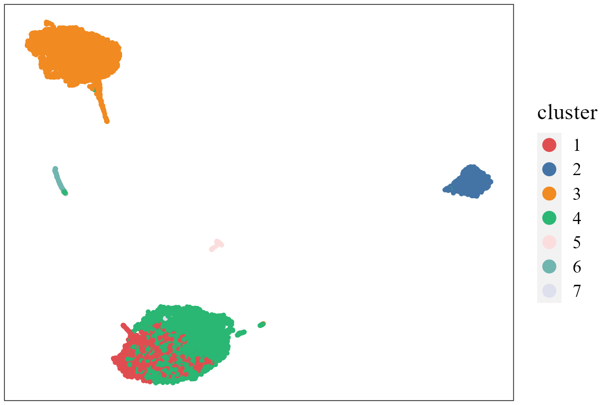
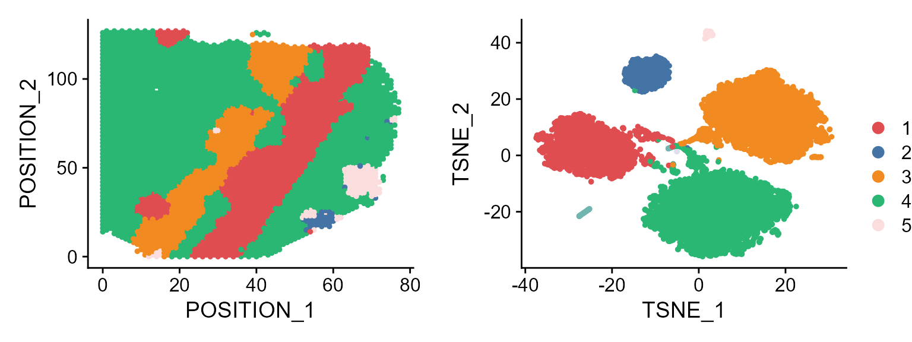

This vignette introduces the PRECAST workflow for the analysis of integrating multiple spatial transcriptomics dataset. The workflow consists of three steps
- Independent preprocessing and model setting
- Probabilistic embedding, clustering and alignment using PRECAST model
- Downstream analysis (i.e. visualization of clusters and embeddings, combined differential expression analysis)
We demonstrate the use of PRECAST to three simulated Visium data that are here, which can be downloaded to the current working path by the following command:
githubURL <- "https://github.com/feiyoung/PRECAST/blob/main/vignettes_data/data_simu.rda?raw=true"
download.file(githubURL,"data_simu.rda",mode='wb')Then load to R
load("data_simu.rda")The package can be loaded with the command:
library(PRECAST)
#> Loading required package: parallel
#> Loading required package: gtools
#> PRECAST : An efficient data integration method is provided for multiple spatial transcriptomics data with non-cluster-relevant effects such as the complex batch effects. It unifies spatial factor analysis simultaneously with spatial clustering and embedding alignment, requiring only partially shared cell/domain clusters across datasets. More details can be referred to Wei Liu, et al. (2023) <doi:10.1038/s41467-023-35947-w>. Check out our Package website (https://feiyoung.github.io/PRECAST/index.html) for a more complete description of the methods and analyses
library(Seurat)
#> Loading required package: SeuratObject
#> Loading required package: sp
#>
#> Attaching package: 'SeuratObject'
#> The following objects are masked from 'package:base':
#>
#> intersect, tLoad the simulated data
First, we view the the three simulated spatial transcriptomics data with Visium platform.
data_simu ## a list including three Seurat object with default assay: RNA
#> [[1]]
#> An object of class Seurat
#> 2000 features across 4226 samples within 1 assay
#> Active assay: RNA (2000 features, 0 variable features)
#> 2 layers present: counts, data
#>
#> [[2]]
#> An object of class Seurat
#> 2000 features across 3661 samples within 1 assay
#> Active assay: RNA (2000 features, 0 variable features)
#> 2 layers present: counts, data
#>
#> [[3]]
#> An object of class Seurat
#> 2000 features across 3639 samples within 1 assay
#> Active assay: RNA (2000 features, 0 variable features)
#> 2 layers present: counts, dataCheck the content in data_simu.
head(data_simu[[1]])
row.names(data_simu[[1]])[1:10]Create a PRECASTObject object
We show how to create a PRECASTObject object step by step. First, we
create a Seurat list object using the count matrix and meta data of each
data batch. Although data_simu is a prepared Seurat list
object, we re-create a same objcet seuList to show the details.
- Note: the spatial coordinates must be contained in the meta data and
named as
rowandcol, which benefits the identification of spaital coordinates by PRECAST.
## Get the gene-by-spot read count matrices
countList <- lapply(data_simu, function(x){
assay <- DefaultAssay(x)
GetAssayData(x, assay = assay, slot='counts')
} )
#> Warning: The `slot` argument of `GetAssayData()` is deprecated as of SeuratObject 5.0.0.
#> ℹ Please use the `layer` argument instead.
#> This warning is displayed once every 8 hours.
#> Call `lifecycle::last_lifecycle_warnings()` to see where this warning was
#> generated.
## Check the spatial coordinates: Yes, they are named as "row" and "col"!
head(data_simu[[1]]@meta.data)
#> orig.ident nCount_RNA nFeature_RNA row col sample true_cluster
#> S1_spot1 S1 179800 1117 0 16 S1 1
#> S1_spot2 S1 371165 1125 50 102 S1 3
#> S1_spot3 S1 753086 1108 3 43 S1 1
#> S1_spot4 S1 133468 1173 59 19 S1 7
#> S1_spot5 S1 127748 1113 43 9 S1 6
#> S1_spot6 S1 107114 1131 47 13 S1 6
## Get the meta data of each spot for each data batch
metadataList <- lapply(data_simu, function(x) x@meta.data)
## ensure the row.names of metadata in metaList are the same as that of colnames count matrix in countList
M <- length(countList)
for(r in 1:M){
row.names(metadataList[[r]]) <- colnames(countList[[r]])
}
## Create the Seurat list object
seuList <- list()
for(r in 1:M){
seuList[[r]] <- CreateSeuratObject(counts = countList[[r]], meta.data=metadataList[[r]], project = "PRECASTsimu")
}Prepare the PRECASTObject with preprocessing step.
Next, we use CreatePRECASTObject() to create a
PRECASTObject based on the Seurat list object seuList. This
function will do three things:
- Filter low-quality spots and genes, controlled by the arguments
premin.featuresandpremin.spots, respectively; the spots are retained in raw data (seuList) with at least premin.features number of nonzero-count features (genes), and the genes are retained in raw data (seuList) with at leastpremin.spotsnumber of spots. To ease presentation, we denote the filtered Seurat list object as data_filter1.
- Filter low-quality spots and genes, controlled by the arguments
- Select the top 2,000 variable genes (by setting
gene.number=2000) for each data batch usingFindSVGs()function inDR.SCpackage for spatially variable genes orFindVariableFeatures()function inSeuratpackage for highly variable genes. Next, we prioritized genes based on the number of times they were selected as variable genes in all samples and chose the top 2,000 genes. Then denote the Seurat list object as data_filter2, where only 2,000 genes are retained.
- Select the top 2,000 variable genes (by setting
- Conduct strict quality control for data_filter2 by filtering spots
and genes, controlled by the arguments
postmin.featuresandpostmin.spots, respectively; the spots are retained with at leastpost.featuresnonzero counts across genes; the features (genes) are retained with at leastpostmin.spotsnumber of nonzero-count spots. Usually, no genes are filltered because these genes are variable genes.
- Conduct strict quality control for data_filter2 by filtering spots
and genes, controlled by the arguments
If the argument customGenelist is not NULL,
then this function only does (3) based on customGenelist
gene list.
In this simulated dataset, we don’t require to select genes, thus, we
set customGenelist=row.names(seuList[[1]]), representing
the user-defined gene list. User can retain the raw seurat list object
by setting rawData.preserve = TRUE.
## Create PRECASTObject
set.seed(2022)
PRECASTObj <- CreatePRECASTObject(seuList, customGenelist=row.names(seuList[[1]]))
#> Filter spots and features from Raw count data...
#>
#>
#> 2025-09-29 12:48:58.026016 : ***** Filtering step for raw count data finished!, 0.04 mins elapsed.
#> Select the variable genes for each data batch...
#> CreatePRECASTObject: remove genes:gene252 gene644 gene1235 gene1488 with low count reads in seuList.
#> 2025-09-29 12:48:58.031165 : ***** Gene selection finished!, 0 mins elapsed.
#> Filter spots and features from SVGs(HVGs) count data...
#> Normalizing layer: counts
#> Normalizing layer: counts
#> Normalizing layer: counts
#> 2025-09-29 12:49:04.180414 : ***** Filtering step for count data with variable genes finished!, 0.092 mins elapsed.
## User can retain the raw seuList by the following commond.
## PRECASTObj <- CreatePRECASTObject(seuList, customGenelist=row.names(seuList[[1]]), rawData.preserve = TRUE)Fit PRECAST using simulated data
Add the model setting
Add adjacency matrix list and parameter setting of PRECAST. More
model setting parameters can be found in model_set().
## check the number of genes/features after filtering step
PRECASTObj@seulist
#> [[1]]
#> An object of class Seurat
#> 1996 features across 4226 samples within 1 assay
#> Active assay: RNA (1996 features, 0 variable features)
#> 2 layers present: counts, data
#>
#> [[2]]
#> An object of class Seurat
#> 1996 features across 3661 samples within 1 assay
#> Active assay: RNA (1996 features, 0 variable features)
#> 2 layers present: counts, data
#>
#> [[3]]
#> An object of class Seurat
#> 1996 features across 3639 samples within 1 assay
#> Active assay: RNA (1996 features, 0 variable features)
#> 2 layers present: counts, data
## seuList is null since the default value `rawData.preserve` is FALSE.
PRECASTObj@seuList
#> NULL
## Add adjacency matrix list for a PRECASTObj object to prepare for PRECAST model fitting.
PRECASTObj <- AddAdjList(PRECASTObj, platform = "Visium")
#> Neighbors were identified for 4226 out of 4226 spots.
#> Neighbors were identified for 3658 out of 3661 spots.
#> Neighbors were identified for 3638 out of 3639 spots.
## Add a model setting in advance for a PRECASTObj object: verbose =TRUE helps outputing the information in the algorithm; coreNum set the how many cores are used in PRECAST. If you run PRECAST for multiple number of clusters, you can set multiple cores; otherwise, set it to 1.
PRECASTObj <- AddParSetting(PRECASTObj, Sigma_equal=FALSE, maxIter=30, verbose=TRUE, int.model='kmeans',
coreNum =1)Fit PRECAST
For function PRECAST, users can specify the number of
clusters
or set K to be an integer vector by using modified
BIC(MBIC) to determine
.
For convenience, we give a single K here.
### Given K
set.seed(2022)
PRECASTObj <- PRECAST(PRECASTObj, K=7)
#> -----Intergrative data info.: 3 samples, 1996 genes X 11526 spots------
#> -----Numbers of spots are: 4226, 3661, 3639-----
#> Starting computing initial values using kmeans ...
#> Loading required package: irlba
#> Loading required package: Matrix
#> 2025-09-29 12:49:31.365267 : ***** Initialization finished!, 0.371 mins elapsed.
#> ----Fitting PRECAST model...----------------
#> iter = 2, loglik= 9545476.000000, dloglik=1.004445
#> iter = 3, loglik= 10162647.000000, dloglik=0.064656
#> iter = 4, loglik= 10206924.000000, dloglik=0.004357
#> iter = 5, loglik= 10226364.000000, dloglik=0.001905
#> iter = 6, loglik= 10237451.000000, dloglik=0.001084
#> iter = 7, loglik= 10244640.000000, dloglik=0.000702
#> iter = 8, loglik= 10249816.000000, dloglik=0.000505
#> iter = 9, loglik= 10253748.000000, dloglik=0.000384
#> iter = 10, loglik= 10257030.000000, dloglik=0.000320
#> iter = 11, loglik= 10259924.000000, dloglik=0.000282
#> iter = 12, loglik= 10262654.000000, dloglik=0.000266
#> iter = 13, loglik= 10265250.000000, dloglik=0.000253
#> iter = 14, loglik= 10267834.000000, dloglik=0.000252
#> iter = 15, loglik= 10270217.000000, dloglik=0.000232
#> iter = 16, loglik= 10272239.000000, dloglik=0.000197
#> iter = 17, loglik= 10274072.000000, dloglik=0.000178
#> iter = 18, loglik= 10275755.000000, dloglik=0.000164
#> iter = 19, loglik= 10277281.000000, dloglik=0.000149
#> iter = 20, loglik= 10278724.000000, dloglik=0.000140
#> iter = 21, loglik= 10280154.000000, dloglik=0.000139
#> iter = 22, loglik= 10281570.000000, dloglik=0.000138
#> iter = 23, loglik= 10282945.000000, dloglik=0.000134
#> iter = 24, loglik= 10284360.000000, dloglik=0.000138
#> iter = 25, loglik= 10285741.000000, dloglik=0.000134
#> iter = 26, loglik= 10287149.000000, dloglik=0.000137
#> iter = 27, loglik= 10288591.000000, dloglik=0.000140
#> iter = 28, loglik= 10289995.000000, dloglik=0.000136
#> iter = 29, loglik= 10291425.000000, dloglik=0.000139
#> iter = 30, loglik= 10292757.000000, dloglik=0.000129
#> 2025-09-29 12:59:13.996394 : ***** PRECAST model fitting finished!, 9.71 mins elapsed.Other options
Run for multiple K. Here, we set K=6:9.
## Reset parameters by increasing cores.
PRECASTObj2 <- AddParSetting(PRECASTObj, Sigma_equal=FALSE, maxIter=30, verbose=TRUE,
coreNum =2)
set.seed(2023)
PRECASTObj2 <- PRECAST(PRECASTObj2, K=6:7)
resList2 <- PRECASTObj2@resList
PRECASTObj2 <- SelectModel(PRECASTObj2)- Note: For parallel compuation based on Rcpp on Linux, users require to use the following system command to set the C_stack unlimited in case of R Error: C stack usage is too close to the limit.
ulimit -s unlimited
Besides, user can also use different initialization method by setting
int.model, for example, set int.model=NULL;
see the functions AddParSetting() and
model_set() for more details.
Select a best model and re-organize the results by useing
SelectModel(). Even though K is not a vector,
it is also necessary to run SelectModel() to re-organize
the results in PRECASTObj. The selected best K is 7 by
using command str(PRECASTObj@resList).
## check the fitted results: there are four list for the fitted results of each K (6:9).
str(PRECASTObj@resList)
#> List of 1
#> $ :List of 12
#> ..$ cluster :List of 3
#> .. ..$ : num [1:4226, 1] 4 1 4 5 4 4 5 3 4 1 ...
#> .. ..$ : num [1:3661, 1] 3 4 1 3 4 1 1 3 4 5 ...
#> .. ..$ : num [1:3639, 1] 4 4 5 1 4 4 5 1 4 1 ...
#> .. ..- attr(*, "dim")= int [1:2] 3 1
#> ..$ hZ :List of 3
#> .. ..$ : num [1:4226, 1:15] -0.845 -0.464 -0.845 -0.722 -0.822 ...
#> .. ..$ : num [1:3661, 1:15] -0.975 -0.981 -0.451 -1.052 -0.846 ...
#> .. ..$ : num [1:3639, 1:15] -0.866 -0.928 -0.707 -0.424 -0.955 ...
#> .. ..- attr(*, "dim")= int [1:2] 3 1
#> ..$ hV :List of 3
#> .. ..$ : num [1:4226, 1:15] 3.25 10.48 18.34 -3.52 -4.02 ...
#> .. ..$ : num [1:3661, 1:15] 13.63 -7.99 -5.71 -2.61 2.19 ...
#> .. ..$ : num [1:3639, 1:15] 5.262 -0.471 -9.159 0.259 -0.179 ...
#> .. ..- attr(*, "dim")= int [1:2] 3 1
#> ..$ Rf :List of 3
#> .. ..$ : num [1:4226, 1:7] 3.71e-05 1.00 6.29e-06 6.67e-25 1.98e-05 ...
#> .. ..$ : num [1:3661, 1:7] 6.60e-04 3.80e-04 1.00 1.13e-06 6.08e-07 ...
#> .. ..$ : num [1:3639, 1:7] 7.36e-03 1.81e-04 2.67e-11 1.00 5.01e-03 ...
#> .. ..- attr(*, "dim")= int [1:2] 3 1
#> ..$ beta : num [1:3, 1] 2.8 4 3.6
#> ..$ Mu : num [1:7, 1:15] -0.479 -1.67 -1.048 -0.861 -0.691 ...
#> ..$ Sigma : num [1:15, 1:15, 1:7] 0.0234 0 0 0 0 ...
#> ..$ Psi : num [1:15, 1:15, 1:3] 82.0084 -28.1893 2.1016 0.0417 0.7358 ...
#> ..$ W : num [1:1996, 1:15] -0.01287 -0.00644 -0.01465 -0.02239 -0.008 ...
#> ..$ Lam : num [1:3, 1:1996] 0.2362 1.6618 0.2006 0.015 0.0237 ...
#> ..$ loglik : num 10292757
#> ..$ loglik_seq: num [1:30, 1] -2.15e+09 9.55e+06 1.02e+07 1.02e+07 1.02e+07 ...
#> - attr(*, "para_settings")=List of 8
#> ..$ K : num 7
#> ..$ n : int 11526
#> ..$ p : int 1996
#> ..$ q : num 15
#> ..$ r_max : int 3
#> ..$ Sigma_equal : logi FALSE
#> ..$ Sigma_diag : logi TRUE
#> ..$ mix_prop_heter: logi TRUE
#> - attr(*, "class")= chr "SeqK_PRECAST_Object"
## backup the fitted results in resList
resList <- PRECASTObj@resList
# PRECASTObj@resList <- resList
PRECASTObj <- SelectModel(PRECASTObj)
## check the best and re-organized results
str(PRECASTObj@resList) ## The selected best K is 7
#> List of 7
#> $ bestK : num 7
#> $ cluster:List of 3
#> ..$ : num [1:4226, 1] 4 1 4 5 4 4 5 3 4 1 ...
#> ..$ : num [1:3661, 1] 3 4 1 3 4 1 1 3 4 5 ...
#> ..$ : num [1:3639, 1] 4 4 5 1 4 4 5 1 4 1 ...
#> ..- attr(*, "dim")= int [1:2] 3 1
#> $ hZ :List of 3
#> ..$ : num [1:4226, 1:15] -0.845 -0.464 -0.845 -0.722 -0.822 ...
#> ..$ : num [1:3661, 1:15] -0.975 -0.981 -0.451 -1.052 -0.846 ...
#> ..$ : num [1:3639, 1:15] -0.866 -0.928 -0.707 -0.424 -0.955 ...
#> ..- attr(*, "dim")= int [1:2] 3 1
#> $ Rf :List of 3
#> ..$ : num [1:4226, 1:7] 3.71e-05 1.00 6.29e-06 6.67e-25 1.98e-05 ...
#> ..$ : num [1:3661, 1:7] 6.60e-04 3.80e-04 1.00 1.13e-06 6.08e-07 ...
#> ..$ : num [1:3639, 1:7] 7.36e-03 1.81e-04 2.67e-11 1.00 5.01e-03 ...
#> ..- attr(*, "dim")= int [1:2] 3 1
#> $ hV :List of 3
#> ..$ : num [1:4226, 1:15] 3.25 10.48 18.34 -3.52 -4.02 ...
#> ..$ : num [1:3661, 1:15] 13.63 -7.99 -5.71 -2.61 2.19 ...
#> ..$ : num [1:3639, 1:15] 5.262 -0.471 -9.159 0.259 -0.179 ...
#> ..- attr(*, "dim")= int [1:2] 3 1
#> $ hW : num [1:1996, 1:15] -0.01287 -0.00644 -0.01465 -0.02239 -0.008 ...
#> $ icMat : num [1, 1:2] 7 -19816556
#> ..- attr(*, "dimnames")=List of 2
#> .. ..$ : NULL
#> .. ..$ : chr [1:2] "K" "IC"Use ARI to check the performance of clustering:
true_cluster <- lapply(PRECASTObj@seulist, function(x) x$true_cluster)
str(true_cluster)
#> List of 3
#> $ : Named num [1:4226] 1 3 1 7 6 6 7 5 3 3 ...
#> ..- attr(*, "names")= chr [1:4226] "S1_spot1" "S1_spot2" "S1_spot3" "S1_spot4" ...
#> $ : Named num [1:3661] 4 6 3 4 6 3 3 4 6 7 ...
#> ..- attr(*, "names")= chr [1:3661] "S1_spot1" "S1_spot2" "S1_spot3" "S1_spot4" ...
#> $ : Named num [1:3639] 3 1 7 3 5 6 7 3 2 6 ...
#> ..- attr(*, "names")= chr [1:3639] "S1_spot1" "S1_spot2" "S1_spot3" "S1_spot4" ...
mclust::adjustedRandIndex(unlist(PRECASTObj@resList$cluster), unlist(true_cluster))
#> [1] 0.5787175We provide two methods to correct the batch effects in gene
expression level. Method (1) is using only PRECAST results to obtain the
batch corrected gene expressions if the species of data is unknown or
the number of overlapped housekeeping genes between the variable genes
in PRECASTObj@seulist and the genes in database is less
than five. Method (2) is using bouth housekeeping gene and PRECAST
results to obtain the batch corrected gene expressions.
- Note: to obtain batch corrected gene expressions based on
housekeeping genes as the negative control, users must specify the
species of data source and use gene symbol names in
PRECASTObj@seulist.
Integrate the two samples by the function
IntegrateSpaData. Because this is a simulated data, we use
Method (1) by setting species='unknown'.
seuInt <- IntegrateSpaData(PRECASTObj, species='unknown')
#> Using only PRECAST results to obtain the batch corrected gene expressions since species is unknown or the genelist in PRECASTObj has less than 5 overlapp with the housekeeping genes of given species.
#> Start integration...
#> 2025-09-29 12:59:20.776706 : ***** Data integration finished!, 0.096 mins elapsed.
#> Put the data into a new Seurat object...
#> 2025-09-29 12:59:22.661266 : ***** New Seurat object is generated!, 0.031 mins elapsed.
seuInt
#> An object of class Seurat
#> 1996 features across 11526 samples within 1 assay
#> Active assay: PRE_CAST (1996 features, 0 variable features)
#> 2 layers present: counts, data
#> 2 dimensional reductions calculated: PRECAST, position
## The low-dimensional embeddings obtained by PRECAST are saved in PRECAST reduction slot.Visualization
First, user can choose a beautiful color schema using
chooseColors().
cols_cluster <- chooseColors(palettes_name = 'Nature 10', n_colors = 7, plot_colors = TRUE)
Show the spatial scatter plot for clusters
p12 <- SpaPlot(seuInt, batch=NULL, cols=cols_cluster, point_size=2, combine=TRUE)
p12
# users can plot each sample by setting combine=FALSEUsers can re-plot the above figures for specific need by returning a ggplot list object. For example, we only plot the spatial heatmap of first two data batches.
pList <- SpaPlot(seuInt, batch=NULL, cols=cols_cluster, point_size=2, combine=FALSE, title_name=NULL)
drawFigs(pList[1:2], layout.dim = c(1,2), common.legend = TRUE, legend.position = 'right', align='hv')
Show the spatial UMAP/tNSE RGB plot
seuInt <- AddUMAP(seuInt)
SpaPlot(seuInt, batch=NULL,item='RGB_UMAP',point_size=1, combine=TRUE, text_size=15)
## Plot tSNE RGB plot
#seuInt <- AddTSNE(seuInt)
#SpaPlot(seuInt, batch=NULL,item='RGB_TSNE',point_size=2, combine=T, text_size=15)Show the tSNE plot based on the extracted features from PRECAST to check the performance of integration.
seuInt <- AddTSNE(seuInt, n_comp = 2)
p1 <- dimPlot(seuInt, item='cluster', font_family='serif', cols=cols_cluster) # Times New Roman
p2 <- dimPlot(seuInt, item='batch', point_size = 1, font_family='serif')
drawFigs(list(p1, p2), common.legend=FALSE, align='hv') 
# It is noted that only sample batch 1 has cluster 4, and only sample batch 2 has cluster 7. Show the UMAP plot based on the extracted features from PRECAST.
dimPlot(seuInt, reduction = 'UMAP3', item='cluster', cols=cols_cluster, font_family='serif')
Users can also use the visualization functions in Seurat package:
library(Seurat)
p1 <- DimPlot(seuInt[,1: 4226], reduction = 'position', cols=cols_cluster, pt.size =1) # plot the first data batch: first 4226 spots.
p2 <- DimPlot(seuInt, reduction = 'tSNE',cols=cols_cluster, pt.size=1)
drawFigs(list(p1, p2), layout.dim = c(1,2), common.legend = TRUE)
Combined differential expression analysis
dat_deg <- FindAllMarkers(seuInt)
#> Calculating cluster 1
#> Calculating cluster 2
#> Calculating cluster 3
#> Calculating cluster 4
#> Calculating cluster 5
#> Calculating cluster 6
#> Calculating cluster 7
#> Warning in mean.fxn(object[features, cells.1, drop = FALSE]): NaNs produced
library(dplyr)
#>
#> Attaching package: 'dplyr'
#> The following objects are masked from 'package:stats':
#>
#> filter, lag
#> The following objects are masked from 'package:base':
#>
#> intersect, setdiff, setequal, union
n <- 2
dat_deg %>%
group_by(cluster) %>%
top_n(n = n, wt = avg_log2FC) -> top10
head(top10)
#> # A tibble: 6 × 7
#> # Groups: cluster [3]
#> p_val avg_log2FC pct.1 pct.2 p_val_adj cluster gene
#> <dbl> <dbl> <dbl> <dbl> <dbl> <fct> <chr>
#> 1 6.12e-98 1.63 0.859 0.803 1.22e-94 1 gene1953
#> 2 3.41e-24 2.40 0.629 0.702 6.81e-21 1 gene670
#> 3 1.77e- 3 2.68 0.706 0.765 1 e+ 0 2 gene1142
#> 4 4.64e- 3 2.26 0.831 0.827 1 e+ 0 2 gene1237
#> 5 2.24e- 6 1.80 0.716 0.657 4.47e- 3 3 gene274
#> 6 5.25e- 5 2.46 0.736 0.635 1.05e- 1 3 gene948Session Info
sessionInfo()
#> R version 4.4.1 (2024-06-14 ucrt)
#> Platform: x86_64-w64-mingw32/x64
#> Running under: Windows 11 x64 (build 26100)
#>
#> Matrix products: default
#>
#>
#> locale:
#> [1] LC_COLLATE=Chinese (Simplified)_China.utf8
#> [2] LC_CTYPE=Chinese (Simplified)_China.utf8
#> [3] LC_MONETARY=Chinese (Simplified)_China.utf8
#> [4] LC_NUMERIC=C
#> [5] LC_TIME=Chinese (Simplified)_China.utf8
#>
#> time zone: Asia/Shanghai
#> tzcode source: internal
#>
#> attached base packages:
#> [1] parallel stats graphics grDevices utils datasets methods
#> [8] base
#>
#> other attached packages:
#> [1] dplyr_1.1.4 irlba_2.3.5.1 Matrix_1.7-0 Seurat_5.1.0
#> [5] SeuratObject_5.0.2 sp_2.1-4 PRECAST_1.7 gtools_3.9.5
#>
#> loaded via a namespace (and not attached):
#> [1] RcppAnnoy_0.0.22 splines_4.4.1
#> [3] later_1.3.2 tibble_3.2.1
#> [5] polyclip_1.10-7 fastDummies_1.7.4
#> [7] lifecycle_1.0.4 rstatix_0.7.2
#> [9] globals_0.16.3 lattice_0.22-6
#> [11] MASS_7.3-60.2 backports_1.5.0
#> [13] magrittr_2.0.3 limma_3.58.1
#> [15] plotly_4.10.4 sass_0.4.9
#> [17] rmarkdown_2.28 jquerylib_0.1.4
#> [19] yaml_2.3.10 httpuv_1.6.15
#> [21] sctransform_0.4.1 spam_2.10-0
#> [23] spatstat.sparse_3.1-0 reticulate_1.39.0
#> [25] cowplot_1.1.3 pbapply_1.7-2
#> [27] RColorBrewer_1.1-3 abind_1.4-8
#> [29] zlibbioc_1.50.0 Rtsne_0.17
#> [31] GenomicRanges_1.56.2 presto_1.0.0
#> [33] purrr_1.0.2 BiocGenerics_0.50.0
#> [35] GenomeInfoDbData_1.2.12 IRanges_2.38.1
#> [37] S4Vectors_0.42.1 ggrepel_0.9.6
#> [39] listenv_0.9.1 spatstat.utils_3.1-0
#> [41] goftest_1.2-3 RSpectra_0.16-2
#> [43] spatstat.random_3.3-2 fitdistrplus_1.2-1
#> [45] parallelly_1.38.0 pkgdown_2.1.1
#> [47] DelayedMatrixStats_1.26.0 leiden_0.4.3.1
#> [49] codetools_0.2-20 DelayedArray_0.30.1
#> [51] scuttle_1.14.0 tidyselect_1.2.1
#> [53] UCSC.utils_1.0.0 farver_2.1.2
#> [55] viridis_0.6.5 ScaledMatrix_1.12.0
#> [57] matrixStats_1.4.1 stats4_4.4.1
#> [59] spatstat.explore_3.3-2 jsonlite_1.8.9
#> [61] BiocNeighbors_1.22.0 Formula_1.2-5
#> [63] progressr_0.14.0 ggridges_0.5.6
#> [65] survival_3.6-4 scater_1.32.1
#> [67] systemfonts_1.1.0 tools_4.4.1
#> [69] ragg_1.3.3 ica_1.0-3
#> [71] Rcpp_1.0.13 glue_1.7.0
#> [73] gridExtra_2.3 SparseArray_1.4.8
#> [75] xfun_0.47 MatrixGenerics_1.16.0
#> [77] ggthemes_5.1.0 GenomeInfoDb_1.40.1
#> [79] withr_3.0.1 fastmap_1.2.0
#> [81] fansi_1.0.6 digest_0.6.37
#> [83] rsvd_1.0.5 R6_2.5.1
#> [85] mime_0.12 textshaping_0.4.0
#> [87] colorspace_2.1-1 scattermore_1.2
#> [89] tensor_1.5 spatstat.data_3.1-2
#> [91] RhpcBLASctl_0.23-42 utf8_1.2.4
#> [93] tidyr_1.3.1 generics_0.1.3
#> [95] data.table_1.16.0 httr_1.4.7
#> [97] htmlwidgets_1.6.4 S4Arrays_1.4.1
#> [99] uwot_0.2.2 pkgconfig_2.0.3
#> [101] gtable_0.3.5 lmtest_0.9-40
#> [103] SingleCellExperiment_1.26.0 XVector_0.44.0
#> [105] htmltools_0.5.8.1 carData_3.0-5
#> [107] dotCall64_1.1-1 scales_1.3.0
#> [109] Biobase_2.64.0 png_0.1-8
#> [111] harmony_1.2.1 spatstat.univar_3.0-1
#> [113] knitr_1.48 rstudioapi_0.16.0
#> [115] reshape2_1.4.4 nlme_3.1-164
#> [117] cachem_1.1.0 zoo_1.8-12
#> [119] stringr_1.5.1 KernSmooth_2.23-24
#> [121] vipor_0.4.7 miniUI_0.1.1.1
#> [123] GiRaF_1.0.1 desc_1.4.3
#> [125] pillar_1.9.0 grid_4.4.1
#> [127] vctrs_0.6.5 RANN_2.6.2
#> [129] ggpubr_0.6.0 promises_1.3.0
#> [131] car_3.1-3 BiocSingular_1.20.0
#> [133] DR.SC_3.4 beachmat_2.20.0
#> [135] xtable_1.8-4 cluster_2.1.6
#> [137] beeswarm_0.4.0 evaluate_1.0.0
#> [139] cli_3.6.3 compiler_4.4.1
#> [141] rlang_1.1.4 crayon_1.5.3
#> [143] ggsignif_0.6.4 future.apply_1.11.2
#> [145] labeling_0.4.3 mclust_6.1.1
#> [147] plyr_1.8.9 fs_1.6.4
#> [149] ggbeeswarm_0.7.2 stringi_1.8.4
#> [151] viridisLite_0.4.2 deldir_2.0-4
#> [153] BiocParallel_1.38.0 munsell_0.5.1
#> [155] lazyeval_0.2.2 spatstat.geom_3.3-3
#> [157] CompQuadForm_1.4.3 RcppHNSW_0.6.0
#> [159] patchwork_1.3.0 sparseMatrixStats_1.16.0
#> [161] future_1.34.0 ggplot2_3.5.2
#> [163] statmod_1.5.0 shiny_1.9.1
#> [165] highr_0.11 SummarizedExperiment_1.34.0
#> [167] ROCR_1.0-11 broom_1.0.7
#> [169] igraph_2.0.3 bslib_0.8.0